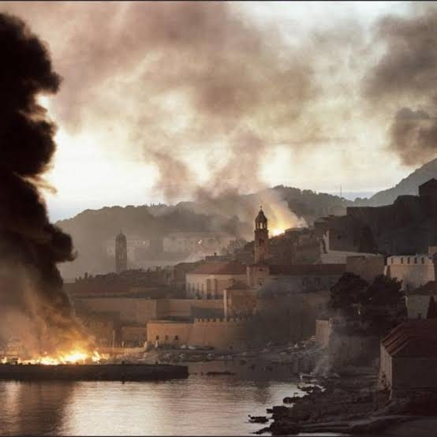
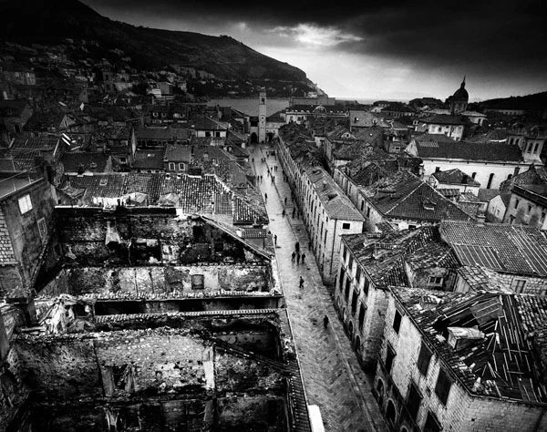
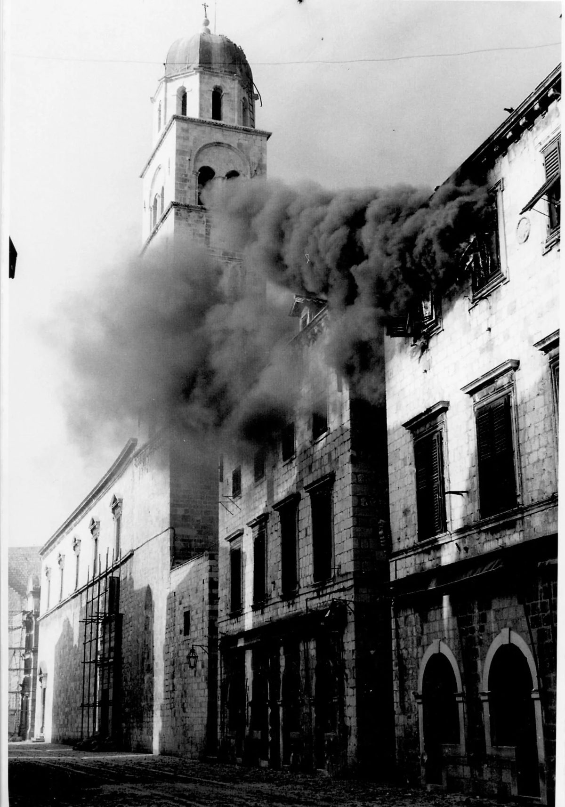

Geopolitički položaj i početak opsade (listopad 1991.)
Početkom jeseni 1991. godine, raspadom SFR Jugoslavije i agresijom JNA te srpskih i crnogorskih paravojnih postrojbi na Republiku Hrvatsku, krajnji jug zemlje našao se u iznimno ranjivom položaju. Dubrovnik je bio geografski odvojen od ostatka slobodnog teritorija Hrvatske, okružen s kopna teritorijem pod kontrolom neprijatelja, dok je s mora bila uspostavljena čvrsta ratna mornarička blokada.
Planovi agresora
Cilj operacije bio je ovladati dubrovačkim područjem, proglasiti ga tzv. „Dubrovačkom Republikom“ te ga odvojiti od matice zemlje.
Početak napada
Dana 1. listopada 1991. započeo je opći napad. Grad je preko noći od turističkog središta pretvoren u frontu. Nestalo je električne energije, isključen je dotok pitke vode iz vodovoda u Komolcu, a prekinute su sve telefonske i poštanske veze sa svijetom.
Svakodnevni život, skloništa i herojska ratna bolnica

Nakon što je grad ostao bez vode i struje, započela je teška humanitarna borba za preživljavanje.
Opskrba vodom i hranom: Pitka voda postala je dragocjenost. Stanovnici su se oslanjali na kišnicu, stare gradske bunare (poput Onofrijeve česme) te na hvalevrijedne akcije malih brodova koji su pod paljbom dopremali minimalne količine namirnica i lijekova. Kruh se pekao u noćnim satima uz velike sigurnosne rizike.
Podzemni život: Škole, vrtići, uredi i obitelji preselili su se u kamena skloništa, podrume i duboke dubrovačke zidine. Unatoč stalnoj psihozi straha, stanovnici nisu gubili dostojanstvo – unutar zidina održavale su se skromne kulturne večeri, a radijski reporteri Radio Dubrovnika neustrašivo su izvještavali javnost, šaljivo i hrabro tješeći prestrašene građane.

Ratna bolnica u Lazu: Posebno poglavlje otpora ispisali su liječnici, medicinske sestre i osoblje Opće bolnice Dubrovnik, koji su u ekstremnim uvjetima i pod stalnim granatiranjem operirali ranjenike u podrumskim prostorijama.
Ključna uloga brda Srđ i Konvoj Libertas
Brdo Srđ – štit grada: Iznad stare gradske jezgre uzdiže se tvrđava Imperijal na brdu Srđ. Ta je utvrda bila strateški najvažnija točka obrane; tko je držao Srđ, vladao je Dubrovnikom. Malobrojni i slabo naoružani hrvatski branitelji nadljudskim su naporima, uz velike žrtve, uspjeli obraniti utvrdu i spriječiti prodor neprijatelja u sam grad.
Probijanje pomorske blokade – Konvoj Libertas: Kako bi se razbila nehumana blokada i svijetu skrenula pozornost na stradanje grada, u listopadu 1991. godine organiziran je legendarni Konvoj Libertas. Predvođen brodom „Slavija“ te praćen desetinama manjih brodova, intelektualaca, političara i humanitaraca iz cijele Europe, konvoj je uplovio u dubrovačku luku probivši obruč jugoslavenske ratne mornarice, čime je pružena neprocjenjiva moralna i materijalna podrška opkoljenom stanovništvu.
Crni petak: 6. prosinca 1991. i stradanje baštine
Iako su napadi trajali mjesecima, najteži dan u povijesti modernog Dubrovnika dogodio se 6. prosinca 1991. godine, na blagdan Svetog Nikole.
Masovni topnički udar: JNA i agresorske snage pokrenule su furiozni topnički napad s kopna i mora. U samo jednom danu na staru gradsku jezgru – spomenik nulte kategorije pod zaštitom UNESCO-a – sručilo se više od 2000 topničkih projektila.
Požari i razaranja: Stradale su brojne palače, crkve, barokni krovovi (preko 60% zgrada u jezgri pretrpjelo je oštećenja), Stradun i čuvene gradske zidine.
Iako su agresori pokušali slomiti srce Mediterana kišom granata i potpunom blokadom, nisu uspjeli uništiti ono najvažnije – ljubav njegovih stanovnika prema svome gradu i slobodi. Zahvaljujući nevjerojatnoj hrabrosti malobrojnih branitelja na brdu Srđ, požrtvovnosti liječnika u ratnoj bolnici i nesebičnosti običnih ljudi, Dubrovnik je obranjen.
Dubrovnik ostaje vječni simbol otpora, ali i dokaz da se uz trud, znanje i ljubav sve može ponovno izgraditi i sačuvati za buduće generacije.